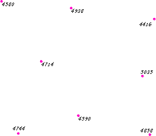
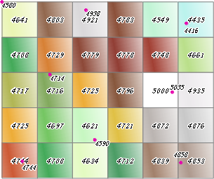
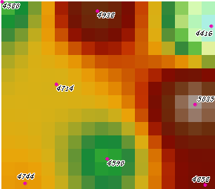

com.supermap.android.spatialAnalyst.InterpolationAnalystService
com.supermap.android.spatialAnalyst.InterpolationAnalystService
|
|||||||||
| 上一个类 下一个类 | 无框架 | ||||||||
| 摘要： 嵌套 | 字段 | 构造方法 | 方法 | 详细信息： 字段 | 构造方法 | 方法 | ||||||||
java.lang.Object
public class InterpolationAnalystService
插值分析服务类。
插值分析是用于对离散的点数据进行插值得到栅格数据集。插值分析可以将有限的采样点数据，通过插值对采样点周围的数值情况进行预测，从而掌握研究区域内数据的总体分布状况，而使采样的离散点不仅仅反映其所在位置的数值情况，而且可以反映区域的数值分布。 由于地理空间要素之间存在着空间关联性，即相互邻近的事物总是趋于同质，也就是具有相同或者相似的特征，举个例子，街道的一遍下雨了，那么街道的另一边在大多数情况下也一定在下雨，如果在更大的区域范围，一个乡镇的气候应当与其接壤的另一的乡镇的气候相同，等等，基于这样的推理，我们就可以利用已知地点的信息来间接获取与其相邻的其他地点的信息，而插值分析就是基于这样的思想产生的，也是插值重要的应用价值之一。
将某个区域的采样点数据插值生成栅格数据，实际上是将研究区域按照给定的格网尺寸（分辨率）进行栅格化，栅格数据中每一个栅格单元对应一块区域，栅格单元的值由其邻近的采样点的数值通过某种插值方法计算得到，因此，就可以预测采样点周围的数值情况，进而了解整个区域的数值分布情况。其中，插值方法主要有距离反比权值插值法、克吕金（Kriging）内插法、径向基函数RBF（Radial Basis Function）插值法等。
利用插值分析功能能够预测任何地理点数据的未知值，如高程、降雨量、化学物浓度、噪声级等等。
下面几幅图，就是利用采样点的高程数据进行插值分析得到栅格数据的示意图，其所使用的插值方法都是距离反比权值插值法，但所使用的分辨率不同。
如图一为插值使用的采样点数据，数值为高程值，利用距离反比权值插值法，分辨率为3000米所得的插值结果如图二所示，每个栅格单元中的数值为栅格单元的值，这些值都是由采样点的数值插值得出的，由此可以大致地了解这块区域地形的高低状况。当设置更高的分辨率后，地形的起伏趋势将更加清晰化，图三为1000米分辨率，图四为30米分辨率，因此设置合理的分辨率值以及合适的插值算法，就可以从有限的采样点数据中，挖据出更多的信息。




| 嵌套类摘要 | |
|---|---|
static class |
InterpolationAnalystService.InterpolationAnalystEventListener处理插值分析结果的监听器抽象类。 |
| 构造方法摘要 | |
|---|---|
InterpolationAnalystService(java.lang.String url)构造函数。 |
|
| 方法摘要 | |
|---|---|
InterpolationAnalystResult |
getLastResult()返回插值分析结果。 |
void |
process(InterpolationAnalystParameters params, InterpolationAnalystService.InterpolationAnalystEventListener listener)根据插值分析与服务端完成异步通讯，即发送分析参数，并通过实现InterpolationAnalystEventListener监听器处理分析结果。 |
void |
setTimeout(int timeout)用户自定义超时时间。 |
| 从类 java.lang.Object 继承的方法 |
|---|
clone, equals, finalize, getClass, hashCode, notify, notifyAll, toString, wait, wait, wait |
| 构造方法详细信息 |
|---|
public InterpolationAnalystService(java.lang.String url)
构造函数。
url - 插值分析服务地址。| 方法详细信息 |
|---|
public void process(InterpolationAnalystParameters params,
InterpolationAnalystService.InterpolationAnalystEventListener listener)
根据插值分析与服务端完成异步通讯，即发送分析参数，并通过实现InterpolationAnalystEventListener监听器处理分析结果。
params - 插值分析参数信息。listener - 处理分析结果的InterpolationAnalystEventListener监听器。public void setTimeout(int timeout)
用户自定义超时时间。
timeout - 用户自定义超时时间。若用户不设置，则使用默认超时间为5秒。0代表无限，即代表不设置超时限制。单位默认为秒。public InterpolationAnalystResult getLastResult()
返回插值分析结果。
|
|||||||||
| 上一个类 下一个类 | 无框架 | ||||||||
| 摘要： 嵌套 | 字段 | 构造方法 | 方法 | 详细信息： 字段 | 构造方法 | 方法 | ||||||||